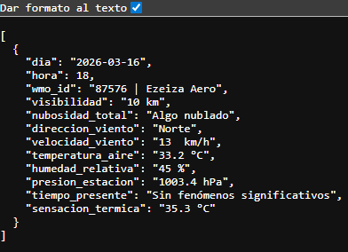

API para obtener el último reporte horario de estaciones meteorológicas oficiales.
La API ArgWeatherAnalytics permite acceder al último reporte horario meteorológico de estaciones oficiales de Argentina. El resultado es un JSON con los siguientes datos:
Al comprar accesos, se te enviará por mail un token personal, el cual deberás utilizar cada vez que desees realizar un pedido. Además del token, vas a necesitar el código wmo_id de la estación. El listado completo lo podés encontrar en esta página.
Endpoint: /ArgWeatherAnalytics
Método: GET
Parámetros: wmo_id; token
Ejemplo para obtener el último reporte de Ezeiza (87576):
/ArgWeatherAnalytics?wmo_id=87576&token=TU_TOKEN

No vas a tener datos de modelos ni estimaciones, sino datos reales y oficiales.
Algo a tener en cuenta es que no todas las estaciones realizan observaciones horarias durante todo el día. Algunas, sólo lo hacen durante horas diurnas. Como el proyecto es nuevo, limitamos las consultas a una por segundo para todos los usuarios.
Con esta cantidad, deberías tener acceso durante todo un mes, para una estación en particular, con un pedido por hora.
Comprar AccesoPróximamente.
Esta no es una API oficial. No tenemos ninguna relación con ninguna entidad pública.
Este es un proyecto nuevo. Es de esperarse que, con un eventual crecimiento, podamos mejorar su funcionalidad.